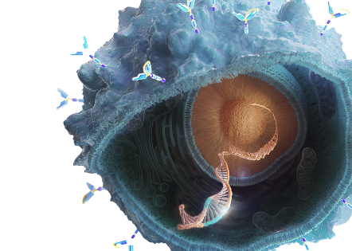

Medicina de precisão no câncer de próstata
Explore conteúdos sobre biomarcadores e práticas diagnósticas atualizadas que apoiam a tomada de decisão no câncer de próstata avançado
O câncer de próstata está entre as neoplasias malignas mais incidentes em homens no mundo e segue como um tema central em saúde pública global.1,2
Nesse cenário, a medicina de precisão amplia o papel do diagnóstico ao apoiar decisões mais assertivas e individualizadas, especialmente em doença avançada. A identificação de biomarcadores e a adoção de estratégias de testagem atualizadas contribuem para a orientação de conduta clínica.3
Nesta página, você encontrará conteúdos que conectam fundamentos e aplicação prática do diagnóstico molecular, incluindo testagem de alterações em genes da via de reparo por recombinação homóloga (HRR).
Explore cada seção e fortaleça sua prática em medicina de precisão no câncer de próstata.
Análise de alterações em genes da via de reparo por recombinação homóloga (HRR) no câncer de próstata metastático
Com o impacto e a alta incidência do câncer de próstata no cenário global,1 cresce a necessidade de estratégias terapêuticas mais personalizadas, especialmente na doença metastática.
Nesse contexto, a análise de alterações em genes da via de reparo por recombinação Homóloga (HRR) ganha relevância por contribuir para estratificação de risco, definição de prognóstico, orientação de tratamento e na seleção de terapias-alvo mais efetivas, com base em fundamentos biológicos e implicações clínicas já bem caracterizados.2
Clique aqui e saiba maisTestagem molecular no câncer de próstata: evidência que guia decisões
Assista ao vídeo com a Dra. Mariana Petaccia e veja como a testagem molecular e a identificação de biomarcadores podem transformar a jornada diagnóstica e apoiar decisões terapêuticas mais seguras e consistentes.
Biópsia líquida como alternativa para o diagnóstico molecular em câncer de próstata metastático
A caracterização molecular tornou-se parte central do manejo do câncer de próstata metastático, impulsionada pela identificação de alterações genômicas acionáveis, incluindo genes da via HRR.3
Considerando as limitações práticas da biópsia de tecido em doença avançada, a análise de ctDNA por meio da biópsia líquida, vem se consolidando uma ferramenta promissora para refletir o perfil tumoral de maneira dinâmica.3,4,5
Clique aqui e saiba maisCada achado molecular é uma oportunidade de transformar o diagnóstico em decisões mais precisas. Explore os conteúdos e fortaleça ainda mais sua atuação na medicina de precisão.3–11

ctDNA: cell-tumor DNA (DNA tumoral circulante); DNA: Ácido desoxirribonucleico; HRR: Reparo por Recombinação Homóloga.
Referências:
- International Agency for Research on Cancer. Prostate cancer fact sheet [Internet]. GLOBOCAN; 2022 [Acesso em 15 jan 2026]. Disponível em: https://gco.iarc.who.int/media/globocan/factsheets/cancers/27-prostate-fact-sheet.pdf.
- International Agency for Research on Cancer. Cancer Today – World fact sheet [Internet]. GLOBOCAN; 2022 [Acesso em 15 jan 2026]. Disponível em: https://gco.iarc.who.int/media/globocan/factsheets/populations/900-world-fact-sheet.pdf.
- Mateo J, Boysen G, Barbieri CE, et al. DNA Repair in Prostate Cancer: Biology and Clinical Implications. Eur Urol. 2017;71(3):417-425.
- Heitzer E, Haque IS, Roberts CES, Speicher MR. Current and future perspectives of liquid biopsies in genomics-driven oncology. Nat Rev Genet. 2019;20(2):71-88. doi:10.1038/ s41576-018-0071-5.
- Chen K, Shields MD, Chauhan PS, et al. Commercial ctDNA Assays for Minimal Residual Disease Detection of Solid Tumors. Mol Diagn Ther. 2021;25(6):757-774. doi:10.1007/s40291-021-00559-x.
- Robinson D, Van Allen EM, Wu YM, Schultz N, Lonigro RJ, Mosquera JM, et al. Integrative clinical genomics of advanced prostate cancer. Cell. 2015;161(5):1215-28.
- Armenia J, Wankowicz SAM, Liu D, Gao J, Kundra R, Reznik E, et al. The long tail of oncogenic drivers in prostate cancer. Nat Genet. 2018;50(5):645-51.
- Abida W, Cyrta J, Heller G, Prandi D, Armenia J, Coleman I, et al. Genomic correlates of clinical outcome in advanced prostate cancer. Proc Natl Acad Sci U S A. 2019;116(23):11428-36.
- Mateo J, Carreira S, Sandhu S, Miranda S, Mossop H, Perez-Lopez R, et al. DNA-repair defects and olaparib in metastatic prostate cancer. N Engl J Med. 2015;373(18):1697-708.
- Pritchard CC, Mateo J, Walsh MF, De Sarkar N, Abida W, Beltran H, et al. Inherited DNA-repair gene mutations in men with metastatic prostate cancer. N Engl J Med. 2016;375(5):443-53.
- Stopsack KH, Nandakumar S, Wibmer AG, Haywood S, Weg ES, Barnett ES, et al. Oncogenic genomic alterations, prostate cancer phenotypes, and clinical outcomes. J Natl Cancer Inst. 2020;112(4):331-9.